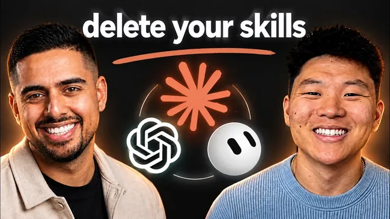

AI 에이전트, 진짜 제대로 고르는 법

원본 영상 보기 →
- 모델 논쟁보다 하네스에 투자하세요
- 작업 단계별로 도구를 섞어 쓰세요
- 스킬은 유통기한이 있어요
한 줄 요약
AI 자동화 유튜버 Nate Herk가 하네스·AIOS 전문가 Mark Kashef와 나눈 대담이에요. "모델(브레인)보다 하네스(도구·시스템)가 훨씬 중요하다"는 주제로, Claude Code와 Codex 비교부터 스킬 부패 관리법까지 다룹니다.
전체 내용 정리
모델은 "유리병 속 뇌"일 뿐이에요
Claude가 낫다, Codex가 낫다는 논쟁은 사실 뇌 하나만 놓고 싸우는 것과 같습니다.
실제로 작업을 수행하게 만드는 건 파일을 읽고 쓰고, bash로 컴퓨터를 직접 제어하는 하네스(harness) 쪽이에요.
실험으로 보여 줍니다. 로컬 모델에게 "웹사이트 만들어서 로컬 서버에 띄워 줘"라고 하면, HTML 코드는 뽑아내도 서버를 실제로 띄우지는 못해요. 뇌는 있어도 손발이 없기 때문입니다. LM Studio로 오픈소스 모델(Qwen)에게 직접 시켜 보니 코드는 짜지만 로컬 서버를 못 띄우는 걸 실시간으로 확인할 수 있었어요.
모델을 뇌로, 그 주변 도구들을 손발로 이해하면 왜 하네스를 더 잘 갖추는 게 특정 모델에 대한 의존도를 낮추는 길인지 알 수 있습니다.
로컬 모델로 70~80%는 처리 가능해요
좋은 하네스만 갖추면 로컬 모델(Kimi 등 오픈소스)로도 일상 업무의 70~80%는 처리 가능하다는 게 Mark의 전망입니다.
나머지 20~30%, 그러니까 기획이나 복잡한 추론이 필요한 "천재급" 작업에만 Claude Code나 Codex 같은 고성능 모델을 투입하면 돼요.
Claude Chat(웹)과 Claude Code의 차이도 같은 맥락입니다. 웹 버전은 리서치와 문서 생성은 하지만 로컬 파일 접근이나 외부 플랫폼 호출 같은 "중간 단계"를 못 건드려요.
Mark는 앞으로 Claude Chat 같은 순수 대화형 인터페이스는 사라지고, 모든 것이 하네스를 낀 형태로 통합될 거라 봅니다.
Claude Code는 "현명한 올빼미", Codex는 "로트와일러"
두 도구의 성격 차이를 이렇게 비유해요.
Claude Code는 함께 기획하고 아이디어를 내며 때로는 반박도 하는 비전가형입니다. 다만 지시를 곧이곧대로 따르지 않을 때가 있어요.
Codex는 일단 물면 놓지 않고 끝까지 실행하는 타입이에요. 검증 루프가 훨씬 날카롭습니다.
Mark는 실제로 Claude Code의 계획을 Codex에게 검토시켜 10라운드씩 서로 "싸우게" 만들어 놓친 부분을 채웁니다.
핵심은 어느 게 최고냐가 아니라 어떤 작업 단계에 어느 도구가 맞는지예요. 5단계 작업이면 1~2단계는 Codex, 나머지는 Claude Code처럼 나눠 쓸 수 있습니다.
스킬을 모델에 종속시키지 마세요
Mark의 원칙은 분명해요. "특정 제공사가 아니라 내 하네스와 자산에만 충성한다."
그래서 만든 스킬은 모두 모델에 상관없이 작동하도록 설계하고, 자체 제작한 /poly skill로 Claude Code용 스킬을 Codex에 맞게 자동 변환·최적화합니다.
방법은 이래요. 스킬 파일 상단 YAML(이름, 설명, 트리거 문구)에서 각 하네스가 우선시하는 항목이 다르기 때문에, 설명을 더 풍부하게 다듬어 양쪽 다 인식하게 만듭니다. Python 스크립트는 애초에 범용이라 손댈 게 적고요.
이렇게 하면 Gemini가 갑자기 확 좋아져도 하루 만에 전환할 수 있는 유연성이 생깁니다. "브랜드 팀"에 갇히지 않는 게 목표예요.
rot.md — 레이어마다 부패 속도가 달라요
Mark는 "rot.md"라는 파일로 자신의 AI 운영체제를 계층별 부패 속도에 따라 관리합니다.
| 레이어 | 갱신 주기 | |---|---| | 정체성·목표 같은 핵심 컨텍스트 | 1~3개월 이상 안정적 | | 스킬 | 매달 감사·최적화 | | 규칙(rules) | 새 엣지케이스를 만날 때마다 매주 또는 매일 | | 후크(hooks) | 6개월 가까이 잘 안 바뀜 |
스킬과 에이전트가 가장 빨리 낡아요.
Anthropic의 Boris Cherny가 "6개월마다 모든 스킬을 삭제하라"고 트윗한 이유가 있습니다. 모델이 충분히 똑똑해지면 스킬이라는 "목발" 없이도 막연한 프롬프트만으로 같은 결과를 낼 수 있거든요. 실제로 Mark는 대화 로그 관리용 스킬을 없애고 이제 한 문장 지시만으로 같은 걸 처리합니다.
하나의 거대 시스템 대신 도메인별로 격리해요
Mark는 세금·컨설팅·콘텐츠 등 사업 영역마다 완전히 분리된 운영체제를 따로 둡니다.
관리 부담은 늘지만 장점이 큽니다. 문제가 생겼을 때 "모델 문제인지 하네스 문제인지 이 프로젝트 설정 문제인지"를 빠르게 격리해서 찾아낼 수 있거든요.
원칙은 이거예요. "모든 건 기본적으로 프로젝트 단위이고, 검증되어야만 전역(global)으로 승격." 이렇게 하면 전역 규칙이 다른 프로젝트에 의도치 않게 영향을 주는 사고를 막습니다.
핵심 인사이트
- 모델 논쟁보다 하네스에 투자하세요: "어떤 모델이 더 똑똑한가"보다 "내 도구와 시스템이 얼마나 잘 갖춰져 있는가"가 실제 업무 성과를 좌우합니다.
- 작업 단계별로 도구를 섞어 쓰세요: Claude Code와 Codex 중 하나만 고집하지 말고, 기획은 한쪽에 실행·검증은 다른 쪽에 맡기는 식으로 단계별 최적 조합을 찾는 게 나아요.
- 스킬은 유통기한이 있어요: 한번 만든 자동화 규칙이나 스킬을 방치하면 모델이 발전할수록 오히려 결과물을 제한하는 족쇄가 될 수 있습니다. 주기적으로 "이거 아직도 필요한가"를 점검해야 해요.
오늘 당장 해볼 것
- 지금 쓰고 있는 자동화 프롬프트나 매뉴얼 중 "3개월 전엔 필요했지만 지금은 AI가 알아서 하는 것"이 있는지 하나씩 점검해 보세요.
- 업무 영역별로 AI에게 주는 지침 문서를 하나로 뭉치지 말고 영역별로 분리해서 관리해 보세요. 문제 생겼을 때 원인 찾기가 훨씬 쉬워집니다.
- 반복적으로 쓰는 AI 프롬프트나 자동화 설정이 있다면, "이 설정이 지금도 필요한가, AI가 알아서 처리할 수 있게 됐나"를 분기마다 다시 물어보는 리마인더를 만들어 두세요.